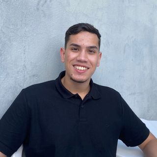

Informações Pessoais
Nome: Gustavo Leite Siqueira Ramos
Idade: 20 anos
Foto

Escolaridade
- Ensino Médio / Escola Estadual Joaqui Saraiva
- Ensino Fundamental / Centro Educacional Professor Francisco Saldanha
Experiências Profissionais
- Assistente de dados na Callink desde fevereiro de 2023 até o momento, com 1 ano e 2 meses de experiência. Responsabilidades incluem análise de dados, utilização de Python e outras competências.
- Experiência anterior como Assistente de Operações na mesma empresa, de abril de 2022 a fevereiro de 2023, totalizando 11 meses. Nessa posição, lidou com suporte operacional, atividades de integração de equipe e outras duas competências.
- Anteriormente, trabalhou como Profissional de Telemarketing na Callink de agosto de 2021 a abril de 2022, totalizando 9 meses. As responsabilidades incluíam atendimento ao cliente e telemarketing. Todos os trabalhos foram presenciais e realizados em Uberlândia, Minas Gerais, Brasil..
Hobbies
Os meus hobbies favoritos são jogar futebol, ir na academia e assistir aos jogos do meu time do Coração Cruzeiro.
Links Favoritos